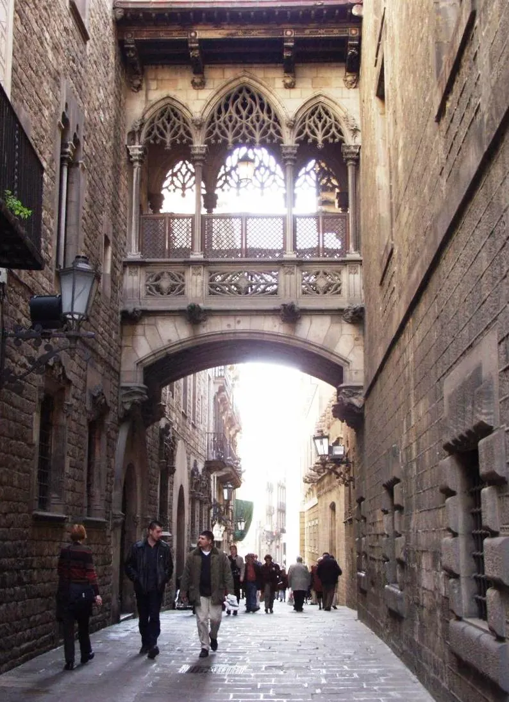

Barri Gòtic

| 지역 | Barcelona |
|---|---|
| 등급 | Must |
| 언제 | Day 3 · 8/31실행 감사표 기준 |
| 상세 | 챕터 본문에서 보기 |
| 지도 | Barcelona 실행지도 · 핀 이름 Gòtic |
참고
오프라인입니다. 위키백과와 지도 링크는 연결되면 다시 동작합니다.
무엇인가
로마 시대 바르시노(Barcino)의 성벽 안쪽이 그대로 중세 도시가 됐다. 길이 좁은 이유는 계획이 아니라 누적이기 때문이다.
에이샴플레와 비교하며 걸어라 Day 2에 사그라다 파밀리아 일대(격자·팔각 교차로)를 걸었다면, Gòtic의 감각 차이가 선명하다. 길 하나 폭이 다르고, 시야가 열리는 방식이 다르고, 소리가 다르다.
로마 성벽을 찾아라 대성당 주변에 로마 시대 성벽 조각이 건물 사이에 박혀 있다. 표지판이 크지 않아 지나치기 쉽다.
광장은 갑자기 나타난다 Gòtic의 광장은 도착 지점이 아니라 사고(事故)처럼 나타난다. 지도를 보며 걷기보다 몇 번 잘못 들어가는 편이 이 구역의 성격에 맞는다.